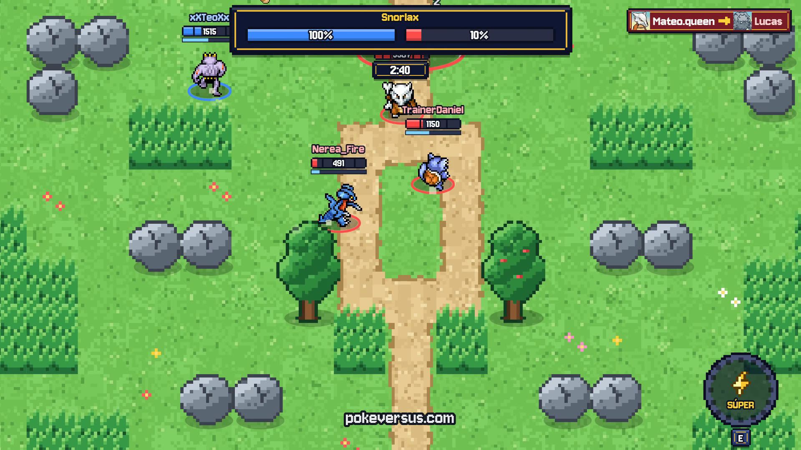

Online · pokeversus.comProyecto principal · 2026
PokéVersus
Juego multijugador online de combates 3 contra 3 que se juega en el navegador, en PC y en móvil, sin descargar nada. Lo he diseñado y programado yo solo con IA, y lo mantengo con actualizaciones y eventos.
- Visitas
- +60.000
- Jugadores distintos
- +20.000
- Partidas jugadas
- +400.000
- Récord a la vez
- +150
- Servidor en Hetzner
- WebSocket
- Firebase
- Cloudflare Workers
- WebRTC
- Canvas 2D
- PWA
Fangame no oficial y sin ánimo de lucro. Pokémon es marca de sus respectivos dueños.